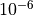
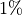

30. Spectrum Module¶
The Spectrum module aims at providing support for modeling the frequency-dependent aspects of communications in ns-3. The model was first introduced in [Baldo2009Spectrum], and has been enhanced and refined over the years.
Spectrogram produced by a spectrum analyzer in a scenario
involving wifi signals interfered by a microwave oven, as simulated
by the example adhoc-aloha-ideal-phy-with-microwave-oven.¶
30.1. Model Description¶
The module provides:
a set of classes for modeling signals and
a Channel/PHY interface based on a power spectral density signal representation that is technology-independent
two technology-independent Channel implementations based on the Channel/PHY interface
a set of basic PHY model implementations based on the Channel/PHY interface
The source code for the spectrum module is located at src/spectrum.
30.1.1. Design¶
30.1.1.1. Signal model¶
The signal model is implemented by the
SpectrumSignalParameters class. This class provides the following
information for a signal being transmitted/received by PHY devices:
a reference to the transmitting PHY device
a reference to the antenna model used by the transmitting PHY device to transmit this signal
the duration of the signal
its Power Spectral Density (PSD) of the signal, which is assumed to be constant for the duration of the signal.
The PSD is represented as a set of discrete scalar values each
corresponding to a certain subband in frequency. The set of frequency subbands
to which the PSD refers to is defined by an instance of the
SpectrumModel class. The PSD itself is implemented as an instance
of the SpectrumValue class which contains a reference to the
associated SpectrumModel class instance. The SpectrumValue
class provides several arithmetic operators to allow to perform calculations
with PSD instances. Additionally, the SpectrumConverter class
provides means for the conversion of SpectrumValue instances from
one SpectrumModel to another.
For a more formal mathematical description of the signal model just described, the reader is referred to [Baldo2009Spectrum].
The SpectrumSignalParameters class is meant to include only
information that is valid for all signals; as such, it is not meant to
be modified to add technology-specific information (such as type of
modulation and coding schemes used, info on preambles and reference
signals, etc). Instead, such information shall be put in a new class
that inherits from SpectrumSignalParameters and extends it with
any technology-specific information that is needed. This design
is intended to model the fact that in the real world we have signals
of different technologies being simultaneously transmitted and
received over the air.
30.1.1.2. Channel/PHY interface¶
The spectrum Channel/PHY interface is defined by the base classes SpectrumChannel
and SpectrumPhy. Their interaction simulates the transmission and
reception of signals over the medium. The way this interaction works is depicted in Sequence diagram showing the interaction between SpectrumPhy and SpectrumChannel:
Sequence diagram showing the interaction between SpectrumPhy and SpectrumChannel¶
30.1.1.3. Spectrum Channel implementations¶
The module provides two SpectrumChannel implementations:
SingleModelSpectrumChannel and MultiModelSpectrumChannel. They
both provide this functionality:
Propagation loss modeling, in three forms:
you can plug models based on
PropagationLossModelon these channels. Only linear models (where the loss value does not depend on the transmission power) can be used. These models are single-frequency in the sense that the loss value is applied equally to all components of the power spectral density.you can plug models based on
SpectrumPropagationLossModelon these channels. These models can have frequency-dependent loss, i.e., a separate loss value is calculated and applied to each component of the power spectral density.you can plug models based on
PhasedArraySpectrumPropagationLossModelon these channels. These models can have frequency-dependent loss, i.e., a separate loss value is calculated and applied to each component of the power spectral density. Additionally, these models support the phased antenna array at the transmitter and the receiver, i.e., ns-3 antenna typePhasedArrayModel.Propagation delay modeling, by plugging a model based on
PropagationDelayModel. The delay is independent of frequency and applied to the signal as a whole. Delay modeling is implemented by scheduling theStartRxevent with a delay respect to theStartTxevent.
SingleModelSpectrumChannel and MultiModelSpectrumChannel are
quite similar, the main difference is that
MultiModelSpectrumChannel allows to use different
SpectrumModel instances with the same channel instance, by
automatically taking care of the conversion of PSDs among the
different models.
30.1.1.4. Example model implementations¶
The spectrum module provides some basic implementation of several components that are mainly intended as a proof-of-concept and as an example for building custom models with the spectrum module. Here is a brief list of the available implementations:
SpectrumModel300Khz300GhzLogandSpectrumModelIsm2400MhzRes1Mhzare two exampleSpectrumModelimplementations
HalfDuplexIdealPhy: a basic PHY model using a gaussian interference model (implemented inSpectrumInterference) together with an error model based on Shannon capacity (described in [Baldo2009Spectrum] and implemented inSpectrumErrorModel. This PHY uses theGenericPhyinterface. Its additional custom signal parameters are defined inHalfDuplexIdealPhySignalParameters.
WifiSpectrumValueHelperis an helper object that makes it easy to createSpectrumValuesrepresenting PSDs and RF filters for the wifi technology.
AlohaNoackNetDevice: a minimal NetDevice that allows to send packets overHalfDuplexIdealPhy(or other PHY model based on theGenericPhyinterface).
SpectrumAnalyzer,WaveformGeneratorandMicrowaveOvenare examples of PHY models other than communication devices - the names should be self-explaining.
30.1.2. References¶
30.2. Usage¶
The main use case of the spectrum model is for developers who want to develop a new model for the PHY layer of some wireless technology to be used within ns-3. Here are some notes on how the spectrum module is expected to be used.
SpectrumPhyandSpectrumChannelare abstract base classes. Real code will use classes that inherit from these classes.If you are implementing a new model for some wireless technology of your interest, and want to use the spectrum module, you’ll typically create your own module and make it depend on the spectrum module. Then you typically have to implement:
a child class of
SpectrumModelwhich defines the (sets of) frequency subbands used by the considered wireless technology. Note: instances ofSpectrumModelare typically statically allocated, in order to allow severalSpectrumValueinstances to reference the sameSpectrumModelinstance.a child class of
SpectrumPhywhich will handle transmission and reception of signals (including, if appropriate, interference and error modeling).a child class of
SpectrumSignalParameterswhich will contain all the information needed to model the signals for the wireless technology being considered that is not already provided by the baseSpectrumSignalParametersclass. Examples of such information are the type of modulation and coding schemes used, the PHY preamble format, info on the pilot/reference signals, etc.The available
SpectrumChannelimplementations (SingleModelSpectrumChannelandMultiModelSpectrumChannel, are quite generic. Chances are you can use them as-is. Whether you prefer one or the other it is just a matter of whether you will have a single SpectrumModel or multiple ones in your simulations.Typically, there will be a single SpectrumChannel instance to which several SpectrumPhy instances are plugged. The rule of thumb is that all PHYs that are interfering with each other shall be plugged on the same channel. Multiple SpectrumChannel instances are expected to be used mainly when simulating completely orthogonal channels; for example, when simulating the uplink and downlink of a Frequency Division Duplex system, it is a good choice to use two SpectrumChannel instances in order to reduce computational complexity.
Different types of SpectrumPhy (i.e., instances of different child classes) can be plugged on the same SpectrumChannel instance. This is one of the main features of the spectrum module, to support inter-technology interference. For example, if you implement a WifiSpectrumPhy and a BluetoothSpectrumPhy, and plug both on a SpectrumChannel, then you’ll be able to simulate interference between wifi and bluetooth and vice versa.
Different child classes of
SpectrumSignalParameterscan coexist in the same simulation, and be transmitted over the same channel object. Again, this is part of the support for inter-technology interference. A PHY device model is expected to use theDynamicCast<>operator to determine if a signal is of a certain type it can attempt to receive. If not, the signal is normally expected to be considered as interference.
30.2.1. Helpers¶
The helpers provided in src/spectrum/helpers are mainly intended
for the example implementations described in Example model implementations.
If you are developing your custom model based on the
spectrum framework, you will probably prefer to define your own
helpers.
30.2.2. Attributes¶
Both
SingleModelSpectrumChannelandMultiModelSpectrumChannelhave an attributeMaxLossDbwhich can use to avoid propagating signals affected by very high propagation loss. You can use this to reduce the complexity of interference calculations. Just be careful to choose a value that does not make the interference calculations inaccurate.The example implementations described in Example model implementations also have several attributes.
30.2.3. Output¶
Both
SingleModelSpectrumChannelandMultiModelSpectrumChannelprovide a trace source calledPathLosswhich is fired whenever a new path loss value is calculated. Note: only single-frequency path loss is accounted for, see the attribute description.The example implementations described in Example model implementations also provide some trace sources.
The helper class
SpectrumAnalyzerHelpercan be conveniently used to generate an output text file containing the spectrogram produced by a SpectrumAnalyzer instance. The format is designed to be easily plotted withgnuplot. For example, if your run the exampleadhoc-aloha-ideal-phy-with-microwave-ovenyou will get an output file calledspectrum-analyzer-output-3-0.tr. From this output file, you can generate a figure similar to Spectrogram produced by a spectrum analyzer in a scenario involving wifi signals interfered by a microwave oven, as simulated by the example adhoc-aloha-ideal-phy-with-microwave-oven. by executing the following gnuplot commands:
unset surface
set pm3d at s
set palette
set key off
set view 50,50
set xlabel "time (ms)"
set ylabel "freq (MHz)"
set zlabel "PSD (dBW/Hz)" offset 15,0,0
splot "./spectrum-analyzer-output-3-0.tr" using ($1*1000.0):($2/1e6):(10*log10($3))
30.2.4. Examples¶
The example programs in src/spectrum/examples/ allow to see the
example implementations described in Example model implementations in action.
30.2.5. Troubleshooting¶
Disclaimer on inter-technology interference: the spectrum model makes it very easy to implement an inter-technology interference model, but this does not guarantee that the resulting model is accurate. For example, the gaussian interference model implemented in the
SpectrumInterferenceclass can be used to calculate inter-technology interference, however the results might not be valid in some scenarios, depending on the actual waveforms involved, the number of interferers, etc. Moreover, it is very important to use error models that are consistent with the interference model. The responsibility of ensuring that the models being used are correct is left to the user.
30.3. Testing¶
In this section we describe the test suites that are provided within the spectrum module.
30.3.1. SpectrumValue test¶
The test suite spectrum-value verifies the correct functionality of the arithmetic
operators implemented by the SpectrumValue class. Each test case
corresponds to a different operator. The test passes if the result
provided by the operator implementation is equal to the reference
values which were calculated offline by hand. Equality is verified
within a tolerance of  which is to account for
numerical errors.
30.3.2. SpectrumConverter test¶
The test suite spectrum-converter verifies the correct
functionality of the SpectrumConverter class. Different test cases
correspond to the conversion of different SpectrumValue instances
to different SpectrumModel instances. Each test passes if the
SpectrumValue instance resulting from the conversion is equal to the reference
values which were calculated offline by hand. Equality is verified
within a tolerance of which is to account for
numerical errors.
Describe how the model has been tested/validated. What tests run in the test suite? How much API and code is covered by the tests? Again, references to outside published work may help here.
30.3.3. Interference test¶
The test suite spectrum-interference verifies the correct
functionality of the SpectrumInterference and
ShannonSpectrumErrorModel in a scenario involving four
signals (an intended signal plus three interferers). Different test
cases are created corresponding to different PSDs of the intended
signal and different amount of transmitted bytes. The test passes if
the output of the error model (successful or failed) coincides with
the expected one which was determine offline by manually calculating
the achievable rate using Shannon’s formula.
30.3.4. IdealPhy test¶
The test verifies that AlohaNoackNetDevice and
HalfDuplexIdealPhy work properly when installed in a node. The
test recreates a scenario with two nodes (a TX and a RX) affected by a path loss such
that a certain SNR is obtained. The TX node transmits with a
pre-determined PHY rate and with an application layer rate which is
larger than the PHY rate, so as to saturate the
channel. PacketSocket is used in order to avoid protocol
overhead. Different
test cases correspond to different PHY rate and SNR values. For each
test case, we calculated offline (using Shannon’s formula) whether
the PHY rate is achievable or not. Each test case passes if the
following conditions are satisfied:
if the PHY rate is achievable, the application throughput shall be within  of the PHY rate;
if the PHY rate is not achievable, the application throughput shall be zero.
30.4. Additional Models¶
30.4.1. TV Transmitter Model¶
A TV Transmitter model is implemented by the TvSpectrumTransmitter class.
This model enables transmission of realistic TV signals to be simulated and can
be used for interference modeling. It provides a customizable power spectral
density (PSD) model, with configurable attributes including the type of
modulation (with models for analog, 8-VSB, and COFDM), signal bandwidth,
power spectral density level, frequency, and transmission duration. A helper
class, TvSpectrumTransmitterHelper, is also provided to assist users in
setting up simulations.
30.4.1.1. Main Model Class¶
The main TV Transmitter model class, TvSpectrumTransmitter, provides a
user-configurable PSD model that can be transmitted on the SpectrumChannel.
It inherits from SpectrumPhy and is comprised of attributes and methods to
create and transmit the signal on the channel.
8K COFDM signal spectrum generated from TvSpectrumTransmitter (Left) and
theoretical COFDM signal spectrum [KoppCOFDM] (Right)¶
One of the user-configurable attributes is the type of modulation for the TV transmitter to use. The options are 8-VSB (Eight-Level Vestigial Sideband Modulation) which is notably used in the North America ATSC digital television standard, COFDM (Coded Orthogonal Frequency Division Multiplexing) which is notably used in the DVB-T and ISDB-T digital television standards adopted by various countries around the world, and analog modulation which is a legacy technology but is still being used by some countries today. To accomplish realistic PSD models for these modulation types, the signals’ PSDs were approximated from real standards and developed into models that are scalable by frequency and power. The COFDM PSD is approximated from Figure 12 (8k mode) of [KoppCOFDM], the 8-VSB PSD is approximated from Figure 3 of [Baron8VSB], and the analog PSD is approximated from Figure 4 of [QualcommAnalog]. Note that the analog model is approximated from the NTSC standard, but other analog modulation standards such as PAL have similar signals. The approximated COFDM PSD model is in 8K mode. The other configurable attributes are the start frequency, signal/channel bandwidth, base PSD, antenna type, starting time, and transmit duration.
TvSpectrumTransmitter uses IsotropicAntennaModel as its antenna model by
default, but any model that inherits from AntennaModel is selectable, so
directional antenna models can also be used. The propagation loss models used
in simulation are configured in the SpectrumChannel that the user chooses to
use. Terrain and spherical Earth/horizon effects may be supported in future ns-3
propagation loss models.
After the attributes are set, along with the SpectrumChannel,
MobilityModel, and node locations, the PSD of the TV transmitter signal can
be created and transmitted on the channel.
30.4.1.2. Helper Class¶
The helper class, TvSpectrumTransmitterHelper, consists of features to
assist users in setting up TV transmitters for their simulations. Functionality
is also provided to easily simulate real-world scenarios.
North America ATSC channel 19 & 20 signals generated using
TvSpectrumTransmitterHelper (Left) and theoretical 8-VSB signal
[Baron8VSB] (Right). Note that the theoretical signal is not shown in dB
while the ns-3 generated signals are.¶
Using this helper class, users can easily set up TV transmitters right after configuring attributes. Multiple transmitters can be created at a time. Also included are real characteristics of specific geographic regions that can be used to run realistic simulations. The regions currently included are North America, Europe, and Japan. The frequencies and bandwidth of each TV channel for each these regions are provided.
Plot from MATLAB implementation of CreateRegionalTvTransmitters method in
TvSpectrumTransmitterHelper. Shows 100 random points on Earth’s surface
(with altitude 0) corresponding to TV transmitter locations within a 2000 km
radius of 35° latitude and -100° longitude.¶
A method (CreateRegionalTvTransmitters) is provided that enables users to randomly generate multiple TV transmitters from a specified region with a given density within a chosen radius around a point on Earth’s surface. The region, which determines the channel frequencies of the generated TV transmitters, can be specified to be one of the three provided, while the density determines the amount of transmitters generated. The TV transmitters’ antenna heights (altitude) above Earth’s surface can also be randomly generated to be within a given maximum altitude. This method models Earth as a perfect sphere, and generated location points are referenced accordingly in Earth-Centered Earth-Fixed Cartesian coordinates. Note that bodies of water on Earth are not considered in location point generation–TV transmitters can be generated anywhere on Earth around the origin point within the chosen maximum radius.
30.4.1.3. Examples¶
Two example simulations are provided that demonstrate the functionality of the
TV transmitter model. tv-trans-example simulates two 8-VSB TV transmitters
with adjacent channel frequencies. tv-trans-regional-example simulates
randomly generated COFDM TV transmitters (modeling the DVB-T standard)
located around the Paris, France area with channel frequencies and bandwidths
corresponding to the European television channel allocations.
30.4.1.4. Testing¶
The tv-spectrum-transmitter test suite verifies the accuracy of the
spectrum/PSD model in TvSpectrumTransmitter by testing if the maximum power
spectral density, start frequency, and end frequency comply with expected values
for various test cases.
The tv-helper-distribution test suite verifies the functionality of the
method in TvSpectrumTransmitterHelper that generates a random number of TV
transmitters based on the given density (low, medium, or high) and maximum
number of TV channels. It verifies that the number of TV transmitters generated
does not exceed the expected bounds.
The CreateRegionalTvTransmitters method in TvSpectrumTransmitterHelper
described in Helper Class uses two methods from the
GeographicPositions class in the Mobility module to generate the random
Cartesian points on or above earth’s surface around an origin point which
correspond to TV transmitter positions. The first method converts Earth
geographic coordinates to Earth-Centered Earth-Fixed (ECEF) Cartesian
coordinates, and is tested in the geo-to-cartesian test suite by comparing
(with 10 meter tolerance) its output with the output of the geographic to ECEF
conversion function [MatlabGeo] of the MATLAB Mapping Toolbox for numerous
test cases. The other used method generates random ECEF Cartesian points around
the given geographic origin point, and is tested in the rand-cart-around-geo
test suite by verifying that the generated points do not exceed the given
maximum distance radius from the origin point.
30.4.2. 3GPP TR 38.901 fast fading model¶
The framework described by TR 38.901 [TR38901] is a 3D statistical Spatial
Channel Model supporting different propagation environments (e.g., urban,
rural, indoor), multi-antenna operations and the modeling of wireless channels
between 0.5 and 100 GHz.
The overall channel is represented by the matrix  , in which each
entry H u,s
, in which each
entry H u,s  corresponds to the impulse response of the channel between the
s-th element of the transmitting antenna and the u-th element of the receiving
antenna. H u,s is generated by the superposition of N different multi-path
components, called clusters, each of which composed of M different rays.
The channel matrix generation procedure accounts for large and small scale
propagation phenomena. The classes ThreeGppSpectrumPropagationLossModel and
ThreeGppChannelModel included in the spectrum module takes care of the generation
of the channel coefficients and the computation of the frequency-dependent
propagation loss.
corresponds to the impulse response of the channel between the
s-th element of the transmitting antenna and the u-th element of the receiving
antenna. H u,s is generated by the superposition of N different multi-path
components, called clusters, each of which composed of M different rays.
The channel matrix generation procedure accounts for large and small scale
propagation phenomena. The classes ThreeGppSpectrumPropagationLossModel and
ThreeGppChannelModel included in the spectrum module takes care of the generation
of the channel coefficients and the computation of the frequency-dependent
propagation loss.
30.4.2.1. Implementation¶
Our implementation is described in [Zugno]. It is based on the model described in [Zhang], but the code has been refactored, extended, and aligned to TR 38.901 [TR38901]. The fundamental assumption behind this model is the channel reciprocity, i.e., the impulse response of the channel between node a and node b is the same as between node b and node a. To deal with the equivalence of the channel between a and b, no matter who is the transmitter and who is the receiver, the model considers the pair of nodes to be composed by one “s” and one “u” node. The channel matrix, as well as other parameters, are saved and used under the assumption that, within a pair, the definition of the “s” and “u” node will always be the same. For more details, please have a look at the documentation of the classes ThreeGppChannelModel and ThreeGppSpectrumPropagationLossModel.
Note:
Currently, no error model is provided; a link-to-system campaign may be needed to incorporate it in existing modules.
The model does not include any spatial consistency update procedure (see [TR38901], Sec. 7.6.1). The implementation of this feature is left as future work.
Issue regarding the blockage model: according to 3GPP TR 38.901 v15.0.0 (2018-06) section 7.6.4.1, the blocking region for self-blocking is provided in LCS.
However, here, clusterAOA and clusterZOA are in GCS and blocking check is performed for self-blocking similar to non-self blocking, that is in GCS. One would expect the angles to be transposed to LCS before checking self-blockage.
30.4.2.2. ThreeGppSpectrumPropagationLossModel¶
The class ThreeGppSpectrumPropagationLossModel implements the PhasedArraySpectrumPropagationLossModel interface and enables the modeling of frequency dependent propagation phenomena while taking into account the specific pair of the phased antenna array at the transmitter and the receiver. The main method is DoCalcRxPowerSpectralDensity, which takes as input the power spectral density (PSD) of the transmitted signal, the mobility models of the transmitting node and receiving node, and the phased antenna array of the transmitting node, and of the receiving node. Finally, it returns the PSD of the received signal.
Procedure used to compute the PSD of to compute the PSD of the received signal:
1. Retrieve the beamforming vectors To account for the beamforming, ThreeGppSpectrumPropagationLossModel has to retrieve the beamforming vectors of the transmitting and receiving antennas. The method DoCalcRxPowerSpectralDensity uses the antenna objects that are passed as parameters for both the transmitting and receiving devices, and calls the method GetCurrentBeamformingVector to retrieve the beamforming vectors of these antenna objects.
2. Retrieve the channel matrix and the channel params The ThreeGppSpectrumPropagationLossModel relies on the ThreeGppChannelModel class to obtain the channel matrix and channel parameters. In particular, it makes use of the method GetChannel, which returns a ChannelMatrix object containing the channel matrix, the generation time, the node pair, and the phased antenna array pair among which is created this channel matrix. Apart from the function GetChannel, there is a function called GetParams which returns a ChannelParams object containing the channel parameters. Notice that the channel information is split into these two structures (ChannelMatrix and ChannelParams) to support multiple collocate phased antenna arrays at TX/RX node. ChannelParams (also its specialization ThreeGppChannelParams structure) contains parameters which are common for all channels among the same RX/TX node pair, while ChannelMatrix contains the channel matrix for the specific pair of the phased antenna arrays of TX/RX nodes. For example, if the TX and the RX node have multiple collocated antenna arrays, then there will be multiple channel matrices among this pair of nodes for different pairs of antenna arrays of the TX and the RX node. These channel matrices that are among the same pair of nodes have common channel parameters, i.e., they share the same channel condition, cluster powers, cluster delays, AoD, AoA, ZoD, ZoA, K_factor, delay spread, etc. On the other hand, each pair of TX and RX antenna arrays has a specific channel matrix and fading, which depends on the actual antenna element positions and field patterns of each pair of antennas array subpartitions. The ThreeGppChannelModel instance is automatically created in the the ThreeGppSpectrumPropagationLossModel constructor and it can be configured using the method SetChannelModelAttribute ().
Notice that in MultiModelSpectrumChannel in StartTx function we added a condition that checks whether the TX/RX SpectrumPhy instances belong to different TX/RX nodes. This is needed to avoid pathloss models calculations among the phased antenna arrays of the same node, because there are no models yet in ns-3 that support the calculation of this kind of interference.
4. Compute the long term component The method GetLongTerm returns the long term component obtained by multiplying the channel matrix and the beamforming vectors. To reduce the computational load, the long term components associated to the different channels are stored in the m_longTermMap and recomputed only if the associated channel matrix is updated or if the transmitting and/or receiving beamforming vectors have changed. Given the channel reciprocity assumption, for each node pair a single long term component is saved in the map.
5. Apply the small scale fading and compute the channel gain
The method CalcBeamformingGain computes the channel gain in each sub-band and
applies it to the PSD of the transmitted signal to obtain the received PSD.
To compute the sub-band gain, it accounts for the Doppler phenomenon and the
time dispersion effect on each cluster.
In order to reduce the computational load, the Doppler component of each
cluster is computed considering only the central ray.
Also, as specified here, it is possible to account for
the effect of environmental scattering following the model described in Sec. 6.2.3
of 3GPP TR 37.885.
This is done by deviating the Doppler frequency by a random value, whose
distribution depends on the parameter  .
The value of can be configured using the attribute “vScatt”
(by default it is set to 0, so that the scattering effect is not considered).
.
The value of can be configured using the attribute “vScatt”
(by default it is set to 0, so that the scattering effect is not considered).
30.4.2.3. ThreeGppChannelModel¶
The class ThreeGppChannelModel implements the channel matrix generation procedure described in Sec. of [TR38901]. The main method is GetChannel, which takes as input the mobility models of the transmitter and receiver nodes, the associated antenna objects, and returns a ChannelMatrix object containing:
the channel matrix of size UxSxN, where U is the number of receiving antenna elements, S is the number of transmitting antenna elements and N is the number of clusters
the clusters delays, as an array of size N
the clusters arrival and departure angles, as a 2D array in which each row corresponds to a direction (AOA, ZOA, AOD, ZOD) and each column corresponds to a different cluster
a time stamp indicating the time at which the channel matrix was generated
the node IDs
other channel parameters
The ChannelMatrix objects are saved in the map m_channelMap and updated when the coherence time expires, or in case the LOS/NLOS channel condition changes. The coherence time can be configured through the attribute “UpdatePeriod”, and should be chosen by taking into account all the factors that affects the channel variability, such as mobility, frequency, propagation scenario, etc. By default, it is set to 0, which means that the channel is recomputed only when the LOS/NLOS condition changes. It is possible to configure the propagation scenario and the operating frequency of interest through the attributes “Scenario” and “Frequency”, respectively.
Blockage model: 3GPP TR 38.901 also provides an optional feature that can be used to model the blockage effect due to the presence of obstacles, such as trees, cars or humans, at the level of a single cluster. This differs from a complete blockage, which would result in an LOS to NLOS transition. Therefore, when this feature is enabled, an additional attenuation is added to certain clusters, depending on their angle of arrival. There are two possi- ble methods for the computation of the additional attenuation, i.e., stochastic (Model A) and geometric (Model B). In this work, we used the implementation provided by [Zhang], which uses the stochastic method. In particular, the model is implemented by the method CalcAttenuationOfBlockage, which computes the additional attenuation. The blockage feature can be disable through the attribute “Blockage”. Also, the attributes “NumNonselfBlocking”, “PortraitMode” and “BlockerSpeed” can be used to configure the model.
30.4.2.4. Testing¶
The test suite ThreeGppChannelTestSuite includes three test cases:
ThreeGppChannelMatrixComputationTest checks if the channel matrix has the correct dimensions and if it correctly normalized
ThreeGppChannelMatrixUpdateTest, which checks if the channel matrix is correctly updated when the coherence time exceeds
ThreeGppSpectrumPropagationLossModelTest, which tests the functionalities of the class ThreeGppSpectrumPropagationLossModel. It builds a simple network composed of two nodes, computes the power spectral density received by the receiving node, and
Checks if the long term components for the direct and the reverse link are the same,
Checks if the long term component is updated when changing the beamforming vectors,
Checks if the long term is updated when changing the channel matrix
Note: TR 38.901 includes a calibration procedure that can be used to validate the model, but it requires some additional features which are not currently implemented, thus is left as future work.
30.4.2.5. References¶
Baron, Stanley. “First-Hand:Digital Television: The Digital Terrestrial Television Broadcasting (DTTB) Standard.” IEEE Global History Network. <http://www.ieeeghn.org/wiki/index.php/First-Hand:Digital_Television:_The_Digital_Terrestrial_Television_Broadcasting_(DTTB)_Standard>.
Kopp, Carlo. “High Definition Television.” High Definition Television. Air Power Australia. <http://www.ausairpower.net/AC-1100.html>.
“Geodetic2ecef.” Convert Geodetic to Geocentric (ECEF) Coordinates. The MathWorks, Inc. <http://www.mathworks.com/help/map/ref/geodetic2ecef.html>.
Stephen Shellhammer, Ahmed Sadek, and Wenyi Zhang. “Technical Challenges for Cognitive Radio in the TV White Space Spectrum.” Qualcomm Incorporated.
3GPP. 2018. TR 38.901. Study on channel for frequencies from 0.5 to 100 GHz. V.15.0.0. (2018-06).
Menglei Zhang, Michele Polese, Marco Mezzavilla, Sundeep Rangan, Michele Zorzi. “ns-3 Implementation of the 3GPP MIMO Channel Model for Frequency Spectrum above 6 GHz”. In Proceedings of the Workshop on ns-3 (WNS3 ‘17). 2017.
Tommaso Zugno, Michele Polese, Natale Patriciello, Biljana Bojovic, Sandra Lagen, Michele Zorzi. “Implementation of a Spatial Channel Model for ns-3”. Submitted to the Workshop on ns-3 (WNS3 ‘20). 2020. Available: https://arxiv.org/abs/2002.09341
30.4.3. Two-Ray fading model¶
The model aims to provide a performance-oriented alternative to the 3GPP TR 38.901
framework [TR38901] which is implemented in the ThreeGppSpectrumPropagationLossModel and
ThreeGppChannelModel classes and whose implementation is described in [Zugno2020].
The overall design follows the general approach of [Polese2018], with aim of providing
the means for computing a 3GPP TR 38.901-like end-to-end channel gain by combining
several statistical terms. The frequency range of applicability is the same as
that of [TR38901], i.e., 0.5 - 100 GHz.
30.4.3.1. Use-cases¶
The use-cases for this channel model comprise large-scale MIMO simulations involving a high number of nodes (100+), such as multi-cell LTE and 5G deployments in dense urban areas, for which the full 3GPP TR 38.901 does not represent a viable option.
30.4.3.2. Implementation - TwoRaySpectrumPropagationLossModel¶
The computation of the channel gain is taken care of by the TwoRaySpectrumPropagationLossModel
class. In particular, the latter samples a statistical term which combines:
The array and beamforming gain, computed as outlined in [Rebato2018] using the
CalcBeamformingGainfunction. This term supports the presence of multiple antenna elements both at the transmitter and at the receiver and arbitrary antenna radiation patterns. Specifically, the array gain is compute as:

where:

and:

In turn,  ,
,  are the number of horizontal and vertical antenna
elements respectively,
are the number of horizontal and vertical antenna
elements respectively,  ,
,  are the element spacing in the
horizontal and vertical direction respectively. The figures below depict the resulting
array radiation pattern versus the relative azimuth of transmitter and receiver, for antenna
arrays featuring 3GPP TR 38.901 (
are the element spacing in the
horizontal and vertical direction respectively. The figures below depict the resulting
array radiation pattern versus the relative azimuth of transmitter and receiver, for antenna
arrays featuring 3GPP TR 38.901 (ThreeGppAntennaModel, top) and isotropic
(IsotropicAntennaModel, bottom) antenna elements, respectively.
These figures match the corresponding plots of [Asplund].

Radiation pattern produced by the CalcBeamformingGain method when using
antenna arrays featuring ThreeGppAntennaModel antenna elements, for various
Uniform Planar Array (UPA) configurations.¶

Radiation pattern produced by the CalcBeamformingGain method when using
antenna arrays featuring IsotropicAntennaModel antenna elements, for various
Uniform Planar Array (UPA) configurations.¶
Whenever the link is in NLOS, a penalty factor is introduced, to account for beam misalignment due to the lack of a dominant multipath component [Kulkarni].
A fast fading term, sampled using the Fluctuating Two Ray (FTR) model distribution [Romero]. The latter is a fading model which is more general than typical ones, taking into account two dominant specular components and a mixture of scattered paths. As, a consequence it has been shown to provide a better fit to fading phenomena at mmWaves. The model parameters are automatically picked once the simulation scenario is set, using a lookup table which associates the simulation parameters (such as carrier frequency and LOS condition) to the FTR parameters providing the best fit to the corresponding TR 38.901 channel statistics. As a consequence, this channel model can be used for all the frequencies which are supported by the 38.901 model, i.e., 0.5-100 GHz. The calibration has been done by first obtaining the statistics of the channel gain due to the small-scale fading in the 3GPP model, using an ad hoc simulation script (
src/spectrum/examples/three-gpp-two-ray-channel-calibration.cc). Then, this information has been used as a reference to estimate the FTR parameters yielding the closest (in a goodness-of-fit sense) fading realizations, using a custom Python script (src/spectrum/utils/two-ray-to-three-gpp-ch-calibration.py).
Note:
To then obtain a full channel model characterization, the model is intended to be used in conjunction of the path loss and shadowing capability provided by the
ThreeGppPropagationLossModelclass. Indeed, the goal of this model is to provide channel realizations which are as close as possible to ones of [TR38901], but at a fraction of the complexity. Since the path loss and shadowing terms are not computationally demanding anyway, the ones of [Zugno2020] have been kept;Currently, the value of NLoS beamforming factor penalty factor is taken from the preliminary work of [Kulkarni] and it is scenario-independent; As future work, the possibility of using scenario-dependent penalty factors will be investigated.
30.4.3.3. Calibration¶
The purpose of the calibration procedures is to compute offline a look-up table which associates the FTR fading model parameters with the simulation parameters. In particular, the [TR38901] fading distributions depend on:
The scenario (RMa, UMa, UMi-StreetCanyon, InH-OfficeOpen, InH-OfficeMixed);
The LOS condition (LoS/NLoS); and
The carrier frequency.
As a consequence, the calibration output is a map which associates LoS condition and scenario to a list of carrier frequency-FTR parameters values. The latter represent the FTR parameters yielding channel realizations which exhibit the closest statistics to [TR38901].
The actual calibration is a two-step procedure which:
1. First generates reference channel gain curves using the
src/spectrum/examples/three-gpp-two-ray-channel-calibration.cc simulation script.
Specifically, the script samples numRealizations channel realizations and computes for each of them
the end-to-end channel gain by setting the speed of the TX and RX pair to  , disabling the shadowing
and fixing the LOS condition. In such a way, any variation around the mean is due to the small-scale fading only.
The channel gain samples are produced, and returned on output conditioned on the value of
, disabling the shadowing
and fixing the LOS condition. In such a way, any variation around the mean is due to the small-scale fading only.
The channel gain samples are produced, and returned on output conditioned on the value of
enableOutput, for each combination of LoS condition, channel model scenario and carrier frequency. The
latter cover the whole [TR38901] frequency range of 0.5 - 100 GHz with a relatively sparse resolution
(500 MHz), since the dependency of the fading distribution with respect to the carrier frequency is actually
relatively weak.

Empirical CDF of the reference channel gains obtained using the three-gpp-two-ray-channel-calibration
simulation script when keeping a fixed LoS condition and channel scenario and varying the carrier
frequency only.¶
2. Then, the output of the above script is parsed by the two-ray-to-three-gpp-ch-calibration.py
Python companion script. In particular, reference ECDFs are obtained from the channel gains sampled using the
model of [TR38901]. In turn, the reference ECDFs (one for each LoS condition, channel model scenario
and carrier frequency combination) are compared to FTR distributions ECDFs obtained using different values
of the parameters. Finally, the parameters which provide the best fit (in a goodness-of-fit sense) for
the specific scenario, LOS condition and carrier frequency are found. The parameters to test are picked initially
by performing an exhaustive search within a discrete grid of possible values, and then by iteratively refining
the previous search runs by scanning the neighborhood of the most recent identified values.
In such regard, the Anderson-Darling statistical test is used to rank the various FTR distributions
and eventually pick the one providing the closest approximation to the reference statistics.
30.4.3.4. Testing¶
The test suite TwoRaySplmTestSuite includes three test cases:
FtrFadingModelAverageTest, which checks that the average of the Fluctuating Two Ray (FTR) fading model realizations is consistent with the theoretical value provided in [Romero].ArrayResponseTest, which checks that the overall array response at boresight computed by the ùCalcBeamformingGainfunction coincides with the expected theoretical values.OverallGainAverageTest, which checks that the average overall channel gain obtained using theDoCalcRxPowerSpectralDensitymethod of theTwoRaySpectrumPropagationLossModelclass is close (it is, after all, a simplified and performance-oriented model) to the one obtained using theThreeGppSpectrumPropagationLossModelandThreeGppChannelModelclasses.
30.4.3.5. References¶
Zugno, Tommaso, Michele Polese, Natale Patriciello, Biljana Bojović, Sandra Lagen, Michele Zorzi. “Implementation of a spatial channel model for ns-3.” In Proceedings of the 2020 Workshop on ns-3, pp. 49-56. 2020.
Michele Polese, Michele Zorzi. “Impact of channel models on the end-to-end performance of mmwave cellular networks”. In: 2018 IEEE 19th International Workshop on Signal Processing Advances in Wireless Communications (SPAWC).
Rebato, Mattia, Laura Resteghini, Christian Mazzucco, Michele Zorzi. “Study of realistic antenna patterns in 5G mmWave cellular scenarios”. In: 2018 IEEE International Conference on Communications (ICC).
Romero-Jerez, Juan M., F. Javier Lopez-Martinez, José F. Paris, Andrea J. Goldsmith. “The fluctuating two-ray fading model: Statistical characterization and performance analysis”. In: IEEE Transactions on Wireless Communications 16.7 (2017).
Kulkarni, Mandar N., Eugene Visotsky, Jeffrey G. Andrews. “Correction factor for analysis of MIMO wireless networks with highly directional beamforming.”, IEEE Wireless Communications Letters, 2018
Asplund, Henrik, David Astely, Peter von Butovitsch, Thomas Chapman, Mattias Frenne, Farshid Ghasemzadeh, Måns Hagström et al. Advanced Antenna Systems for 5G Network Deployments: Bridging the Gap Between Theory and Practice. Academic Press, 2020.